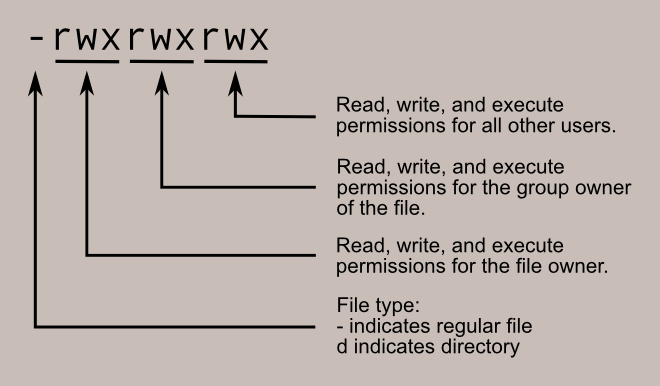

File permissions
The cluster being a shared system, it implements a restrictive default policy with respect to file permissions. This default policy might change depending on how new files are created, but in general, new files will not be “executable” or “writable” by any other person that their owner.
It might even happen that you create a file on your personal computer (if it uses MacOS or Linux, in particular) and that, once transferred to the cluster, this file is not recognized as yours!
So, you will need to understand the basics of file permissions in Linux to work efficiently on the cluster, especially if you want to collaborate with other CNRL members (and you want it, right? 😏).
Checking current file permission
To check all the file permissions within the folder you’re command line is in, you can type:
ls -l
This command will print a list of files and subdirectories, with the first column telling you about permissions.
At first, this first column might look cryptic. For example, you might see lines starting with -rw-r--r-- or drwxr-xr-x .
Here is the meaning of these seemingly random characters (taken from linuxcommand.org).
.
If you created the file, you are its “owner”.
By default, the “group owner” of the file defines any CNRL member (unless you’ve defined some custom group manually).
“All other users” defines any one that can access the cluster (CIA agents, etc.).
Changing file permissions
The magic command to change file permissions is chmod.
It would be quite long to describe all the different ways chmod can be used. In general, if you want to work with someone,
In general, if you want to make a file named “myfile.txt” fully accessible to other CRNL users, you will want to type:
chmod 774 myfile.txt
This grants all permissions to everyone within the CRNL users groups and only reading rights to people outside of CRNL (which should not concern anyone anyway).
Often, you might want to change the permission of an entire folder, its subfolders and all the files contained in it. To do so type, for example:
chmod -R 774 ./directory
Changing ownership
Sometimes, you might want to change the owner of a file, for example if you leave the institute or if you did a part of the job and that a colleague should finish it.
To do so, you can use chown.
For example, if you want to transfer the ownership of a folder and all its content to me, you may write:
chown -R romain.ligneul ./directory
Note that you may also change the group ownership of any folder/file using the following command:
chown -R :newgroup ./directory
However, only root users (i.e. Thibaut) can create new groups. So, if you need to create a group to collaborate with other CRNL members but not any member, you should first ask Thibaut to create the custom group for you.
Using Filezilla
Filezilla has a very convenient interface to see and alter file permissions. Check the Filezilla tutorial to know more
Leave a message
Feel free to comment, make a question, report a bug, etc. If you want to notify a specific user (e.g. to get a faster response), you may include their Github handle in your message (e.g. @romainligneul or @samuelgarcia).